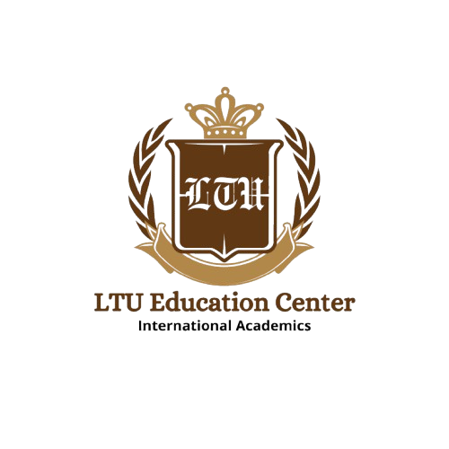

找加拿大大學
依科系、Co-op／研究／就業目標建立清單。
開啟加拿大選校器 →
留學 DIY 導航Study Abroad Navigator找加拿大大學加拿大不是全國單一申請系統。Ontario、BC 與各校流程不同，OSSD、prerequisite、Co-op 與城市就業環境都會影響選校。
依科系、Co-op／研究／就業目標建立清單。
開啟加拿大選校器 →科技、商學、工程、心理、生命科學都可直接比較。
加拿大科系怎麼選 →省級平台、校方申請、prerequisite、英文與文件。
看申請流程 →UBCO、PGWP、OSSD、Co-op 與制度分析。
看 Peter 加拿大文章 →先選有興趣的領域，再使用選校器搜尋、收藏與比較。每所學校的實際學程名稱、校區與入學途徑，請見「完整分析」。
從程式設計、演算法與軟體系統開始比較。
先比較工程分支，再查入學後的分流與專業認證。
辨別直接入學、商學院分流與先修後入學。
依官方學程分為資料科學、AI 專修，以及數學、統計與資訊路徑。
先看校區、國際生資格與入學途徑，再比較臨床訓練。
健康科學、生物醫學與運動科學各有不同課程，不等於醫師資格。
比較分子、細胞、生態與生命科學，以及生物醫學方向。
比較心理、神經科學與行為研究；學士不等於臨床執照。
經濟學與金融分開查找，依興趣比較理論、數量分析及商業應用。
依新聞採訪、媒體研究與影視製作探索；學校詳情會標示輔修。
若重視就業，Co-op、城市產業與課程實務性要一起看。
Toronto、Vancouver、Montreal 等城市產業環境不同，會影響實習與職涯。
六門 4U/M 只是整體框架，工程、CS、商學等仍要看指定科目。
先看課程本身，再看 Co-op、實習與當地工作市場；移民政策需另行以政府最新規則查核。